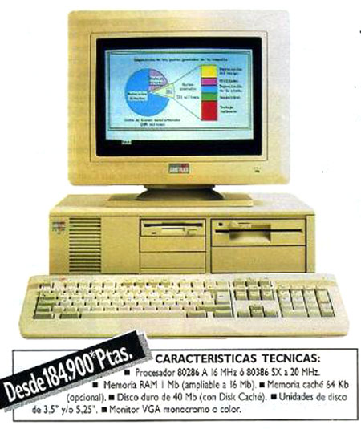

Historia de Internet - Línea del Tiempo
Desde ARPA hasta la era de la nube

Eventos Relacionados
| 1993 - Mosaic | 1998 - Google | 2004 - Facebook | 2007 - Internet Móvil |
1995 – Internet ComercialEn 1995, el gobierno de Estados Unidos eliminó las últimas restricciones sobre el uso comercial de Internet. Hasta ese momento, la National Science Foundation (NSF), que administraba gran parte de la infraestructura de Internet en EE.UU., prohibía su uso para actividades comerciales. La red había sido financiada con fondos públicos para investigación y educación, no para el comercio. Sin embargo, el creciente interés comercial y la presión para privatizar la infraestructura llevaron a un cambio histórico en la política. La eliminación de estas restricciones desató una explosión de actividad comercial en línea. Empresas de todo tipo comenzaron a establecer presencia web. Amazon fue fundada por Jeff Bezos en julio de 1995, inicialmente como una librería en línea operando desde un garaje en Seattle. En septiembre del mismo año, Pierre Omidyar lanzó AuctionWeb, que pronto se convertiría en eBay, revolucionando el concepto de subastas y comercio entre consumidores. La comercialización de Internet también atrajo inversión masiva en infraestructura. Los proveedores de servicios de Internet (ISPs) se multiplicaron, compitiendo por clientes residenciales y empresariales. Las empresas de telecomunicaciones invirtieron miles de millones de dólares en cables de fibra óptica y centros de datos. Esta expansión de infraestructura fue crucial para soportar el crecimiento explosivo del tráfico web en los años siguientes. 1995 es considerado el año que transformó Internet de una red académica en el motor de una nueva economía digital global que eventualmente valdría billones de dólares.  🔗 Fuente: internethistorypodcast.com/netscape-ipo |